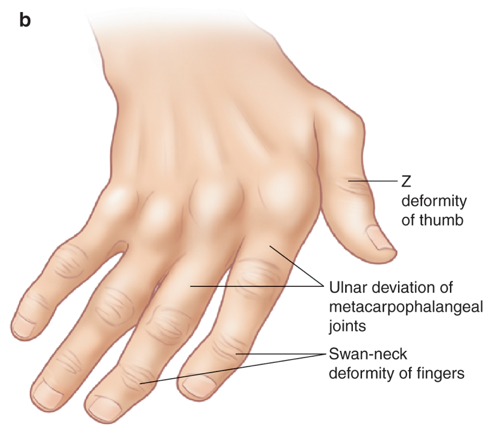

Alignment
- Alignment must be considered with respect to both the individual joint alignment and to the general alignment of the wrist and hand.
- It is important to know the normal alignment of the wrist and hand in the different radiographic positions.
- Malalignment may be reducible and may therefore be only be visible on a single projection, this is classically seen in Jaccoud’s arthropathy.
- Subluxation occurs when the articular margins are no longer 100% aligned within the normal joint range.
- In dislocation there is no remaining contact between the articular surfaces.
- There are variable deformities that are seen in rheumatoid arthritis, secondary to joint laxity/ligamentous and tendinous disruption, including:
- Ulnar sided deviation, commonest at the MCPJs.
- Swan neck deformity- hyperextension at PIPJ and flexion at the DIPJ
- Boutonnière deformity- hyperflexion at the PIPJ and extension at the DIPJ
- Z-deformity thumb- hyperextension at the interphalangeal joint and flexion at the 1st MCPJ
Illustration classical deformities in RhA


Radiograph Examples
Lateral hand radiograph with swan neck deformity
Z-shaped deformity thumb
a) Ulnar subluxations at the 2nd-4th MCP joints and dislocation at the 5th MCPJ. Note also the extensive erosive disease in this patient with Rheumatoid arthritis. Sometimes a second view, oblique or lateral film, may be required to differentiate a severe subluxation from dislocation

b) Normal radiograph for comparison
“Z-shaped” deformity thumb in rheumatoid arthritis
Flexion deformities at the 4th and 5th PIPJs in rheumatoid arthritis patient. Note also the multiple erosions and dislocation at the 5th MCPJ